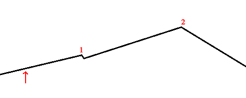

Tabu Search
Tabu search is an extension of hill climbing where a list is kept of the k most recently visited states, so that these states cannot be revisited. The k most recent states are kept in an object called the tabu list, which is usually implemented as a FIFO queue, with a maximum of k values allowed to be stored in it at a time.
At first, the search works identically to hill climb, in that it looks at all neighbors and takes the steepest ascent route. However, whereas hill climbing will automatically stop when it reaches a local maximum, tabu search will examine neighbors and attempt to try out any neighbors that are not on the tabu list, even if that means taking a step towards a lower fitness function. For this reason, the search must always keep track of the best state reached so far in addition to the tabu list.
Below is pseudocode that describes the algorithm in more detail:
$ // Return a state that is a local maximum
$ function tabu_search(problem, max_tabu_list_size):
$ tabu_list ← initialize to empty list
$ current-state ← random starting point
$ loop do
$ neighbors ← all successors of the current-state
$ if fitness(max fitness state in neighbors) ≥ fitness(best_solution):
$ best_solution ← highest fitness state in neighbors
$ k-best-neighbors ← k highest ranked states in neighbors
$ Remove any values of k-best-neighbors ∈ tabu_list
$ if len(k-best-neighbors) = 0:
$ return best_solution
$ current-state ← highest fitness value in k-best-neighbors
$ Add current-state to tabu_list
$ if len(tabu_list > max_tabu_list_size):
$ Remove oldest value from tabu_list
$ Check stopping condition. If met, return best_solution
Because tabu search climbs first climbs too the local maximum before making use of it's tabu list, it is guaranteed to get to a solution at least as optimal as what hill climbing would get to from the same starting point. Of course, it requires more computation than a simple hill climbing algorithm, but tabu search performs significantly better in many search landscapes. For example, imagine that you are searching the landscape below, and you randomly start where the red arrow points:
If you were using hill climbing, the algorithm would continue to climb, but then stop at point 1. With a tabu search, as long as the "bump" at the local minimum at point 1 is within your threshold (i.e. you can get over it in few enough steps that the algorithm doesn't stop), then when it reaches point 1, it will try out the downhill step to the right (it will not return to the left, since it was recently there, so a leftward step would lead to a point in the tabu list), and then soon find the uphill path so that it could continue on towards 2. This is a simplified example, but nonetheless one that illustrates the power of tabu search. Note that the algorithm will still have trouble getting out of steep local maxima since we limit the number of iterations that it could go without making improvements, in order so that the algorithm runs in a reasonable amount of time.
The finch implementation of tabu search has the following signature:
func tabu_search(initial_solution []int, max_num_neighbors int,
tabu_list_max_size int, evaluate func([]int) float64,
get_neighbors func([]int) [][]int)
The function takes in the following parameters:
- initial_solution - An int[] array with an initial solution to seed the algorithm with
- max_num_neighbors - The number of neighbors in the total list of neighbors generated at each step to consider. Larger values for this number might yield better results, but take up more processing time.
- tabu_list_max_size - The maximum number of states to store in the tabu list. Larger values will give better results, but at the expense of increased processing time and memory usage.
- evaluate - A function that you must construct and pass in which takes a solution of type int[] as a parameter and returns a fitness score for the given solution of type float64
- get_neighbors - A function that you must construct and pass in which takes a solution of type int[] as a parameter and returns a 2-dimensional array of type int[][] with all neighboring solutions
The function returns two values:
- The state at the local maximum (type []int)
- The fitness score at the local maximum (type float64)
Random-restart tabu search
The finch library also contains an algorithm for random-restart tabu search, which is directly analogous to random-restart hill climbing. As with random-restart hill climbing, this algorithm generates k random start states and then runs tabu search on all of those. The function has the following signature:func random_restart_tabu_search(num_restarts int, max_num_neighbors int,
tabu_list_max_size int,evaluate func([]int) float64,
create_random func() []int, get_neighbors func([]int) [][]int)
The function takes in the following parameters:
- num_restarts - The number of random restarts to run.
- max_num_neighbors - The number of neighbors in the total list of neighbors generated at each step to consider. Larger values for this number might yield better results, but take up more processing time.
- tabu_list_max_size - The maximum number of states to store in the tabu list. Larger values will give better results, but at the expense of increased processing time and memory usage.
- evaluate - A function that you must construct and pass in which takes a solution of type int[] as a parameter and returns a fitness score for the given solution of type float64
- create_random - A function that you must construct and pass in which takes no parameters and returns a 1-dimensional array of type int[] containing a random starting solution for your problem
- get_neighbors - A function that you must construct and pass in which takes a solution of type int[] as a parameter and returns a 2-dimensional array of type int[][] with all neighboring solutions
The function returns two values:
- The state at the local maximum (type []int)
- The fitness score at the local maximum (type float64)